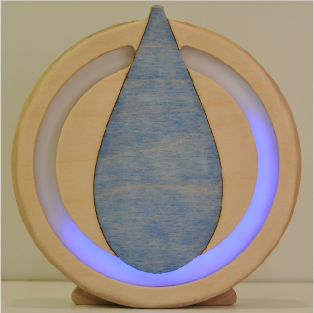

You are now in possession of a RainDrop
The RainDrop is a functional art piece, that delightfully notifies you if there is rain forecasted in the next hour.

Instructions to connect your device to the internet.
- Plug in device to power, the USB cable can be plugged into a USB port on a computer or plugged into a wall outlet using the included wall adapter.
- Ring should breathe Green for 20 seconds while it tries to connect to a WiFi Network.
- After the 20 seconds, the device will breathe Blue, signifying ‘Listening Mode’.
- Connect your computer/phone to a local WiFi network named ‘Photon-XXXX’ where the XXXX are four alphanumeric characters. This network will NOT require a password. For more information on connecting to WiFi networks, click here
- Once you are connected, click here: 192.168.0.1 (or copy/paster to a web browser).
- Follow steps on web browser to connect Device to wifi.
For more information about the units, check out: theRainDrop.us
If you have any questions or you just want to say hi, email me at swoolfdesign@gmail.com
Enjoy,
Sam
Header photo © CBI 2013
Icon photo © Sam Woolf 2017